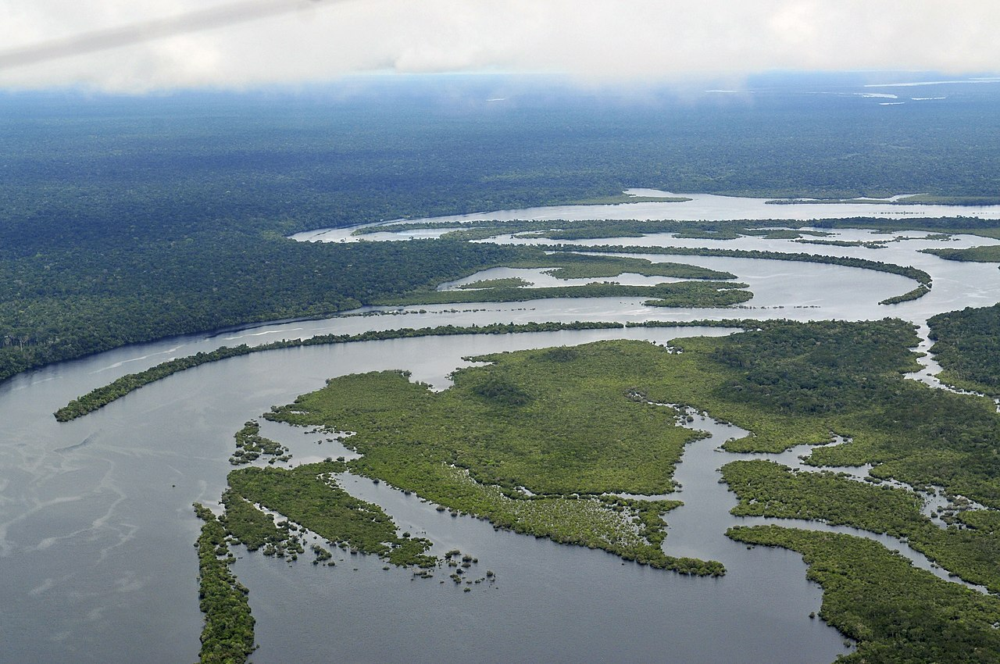

A Floresta Amazônica é a maior floresta tropical úmida do planeta , com cerca de 5,5 milhões de km², dos quais 3,3 milhões estão em território brasileiro. Os 40% restantes se dividem entre Guiana Francesa, Suriname, Guiana, Venezuela, Colômbia, Equador, Peru e Bolívia.
A Amazônia é uma das regiões mais ricas em biodiversidade do planeta. Sua imensa floresta abriga milhões de espécies de plantas, animais, fungos e microrganismos, muitas delas ainda desconhecidas pela ciência. Essa variedade de vida se deve ao clima quente e úmido, que favorece o crescimento de diferentes formas de vegetação e cria ambientes variados, como rios, igarapés, várzeas e florestas densas.
Além das espécies de fauna e flora , a Amazônia é o lar de povos indígenas e comunidades tradicionais que mantêm um conhecimento profundo sobre a floresta, suas plantas medicinais e formas sustentáveis de uso dos recursos naturais. Essa riqueza não é apenas ecológica, mas também cultural.
A preservação da Amazônia é fundamental para manter o equilíbrio climático do planeta, já que a floresta ajuda a regular a temperatura, a produzir oxigênio e a armazenar grandes quantidades de carbono. Proteger essa diversidade de vida é garantir a continuidade dos benefícios que ela oferece à humanidade e ao meio ambiente.
 Image source: Wikimedia CommonsNa Amazônia, a água é mais do que um recurso natural; ela é a espinha dorsal da vida. Os rios amazônicos , servem como estradas líquidas que conectam as comunidades dispersas na vasta floresta, permitindo o transporte de pessoas e mercadorias
As comunidades indígenas da Amazônia possuem uma relação muito especial com a floresta. Para elas, a mata não é apenas um espaço físico, mas o lugar onde se encontram sua história, espiritualidade e sustento.
Esses povos vivem de forma integrada com a natureza, utilizando os recursos da floresta de maneira equilibrada: caçam, pescam, coletam frutos e cultivam pequenas roças sem destruir o ambiente. Muitas comunidades também preservam um vasto conhecimento sobre plantas medicinais, animais e ciclos da natureza, transmitido de geração em geração.
A floresta, para os indígenas, é fonte de alimento, remédio, moradia e também parte de sua identidade cultural . Ela é vista como um ser vivo, com o qual se deve manter respeito e harmonia.
Por isso, a preservação da Amazônia não é apenas uma questão ambiental, mas também de proteção aos povos indígenas e a seus modos de vida, que contribuem diretamente para a conservação da maior floresta tropical do mundo.
A Amazônia enfrenta várias ameaças que colocam em risco sua biodiversidade, seus povos e o equilíbrio do planeta.
Ameaças principais:
- Desmatamento : avanço da agricultura, pecuária e extração ilegal de madeira.
-Queimadas: muitas vezes provocadas para abrir áreas de pasto ou cultivo.
- Garimpo ilegal: polui os rios com mercúrio e prejudica comunidades indígenas e ribeirinhas.
- Mudanças climáticas: afetam o regime de chuvas e aumentam períodos de seca.
- Perda de espécies: destruição dos habitats ameaça animais e plantas.
Necessidade de preservação:
-Equilíbrio climático: a Amazônia ajuda a regular o clima e armazena grandes quantidades de carbono.
-Água: a floresta é essencial para o ciclo das chuvas em várias partes da América do Sul.
-Biodiversidade: abriga milhões de espécies, muitas ainda desconhecidas pela ciência.
-Povos indígenas e comunidades tradicionais: dependem da floresta para sua sobrevivência e cultura.
-Futuro sustentável: proteger a Amazônia garante recursos naturais e qualidade de vida para as próximas gerações.
A Floresta Amazônica possui uma importância global que vai muito além de suas fronteiras. Ela desempenha um papel fundamental na regulação do clima, ajudando a controlar a temperatura do planeta e influenciando os regimes de chuvas em diversas regiões, inclusive fora da América do Sul. Também é uma das maiores reservas de carbono do mundo, contribuindo para reduzir os efeitos do aquecimento global. Sua biodiversidade é imensa, abrigando milhões de espécies de animais, plantas e microrganismos, muitas ainda desconhecidas, com grande potencial para a ciência e para a produção de novos medicamentos.
Outro aspecto essencial é o ciclo da água: a floresta libera enormes quantidades de vapor por meio da evapotranspiração, influenciando diretamente o regime de chuvas em outros continentes. Além de sua riqueza natural, a Amazônia é também um patrimônio cultural, lar de inúmeros povos indígenas e comunidades tradicionais que preservam saberes, línguas e modos de vida únicos. A floresta ainda oferece recursos naturais como alimentos, fibras e substâncias medicinais que beneficiam populações de todo o mundo.